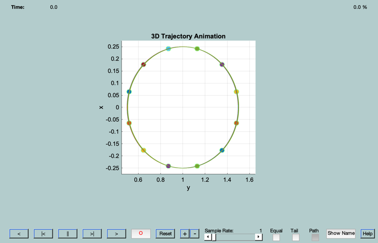

Demonstrate the RotateState function
Demonstrate the RotateState function by rotating the specified geometric state through a variety of phase angles, then animate the resulting motion. All states should follow the same elliptical motion, but have different phases on the ellipse.
Since version 7. ------------------------------------------------------------------------- Form: RotateStateDemo( geom, n ); -------------------------------------------------------------------------
------ Inputs ------ geom (.) Geometric goal set (optional) n (1) Number of rotated states to compute (optional)
------- Outputs ------- none
------------------------------------------------------------------------- See also RotateState, ViewRelativeMotion -------------------------------------------------------------------------
%-------------------------------------------------------------------------- % Copyright (c) 2003 Princeton Satellite Systems, Inc. % All rights reserved. %-------------------------------------------------------------------------- n = 12; geom = struct('y0',1,'aE',.5,'beta',0,'zInc',0,'zLan',.5); dPhi = 2*pi/n; geomRot = geom; phi = 0:dPhi:2*pi; for i=2:length( phi )-1, geomRot(i) = RotateState( geom, phi(i) ); end el0 = [7000, pi/4, pi/6, (1e-4)*cos(pi/5), (1e-4)*sin(pi/5), pi]; ViewRelativeMotion( el0, geomRot, 3 ); %-------------------------------------- % PSS internal file version information %--------------------------------------
reference: reci [-4949.2585863083304503; -4286.1836656412715456; 2474.6292931541643156] veci [ 5.3363089863712574; -4.6215237212175628; 2.6682379645111998] relative #1 reci [-4948.1764040892330740; -4287.0809439606919113; 2474.7391527432782823] veci [ 5.3373408553193222; -4.6206727043392055; 2.6681867823317704] relative #2 reci [-4948.1641320726357662; -4287.1167415658464961; 2475.0186542625087895] veci [ 5.3373047485665133; -4.6204862532730795; 2.6682402000199188] relative #3 reci [-4948.2556330750740017; -4287.0665914180535765; 2475.2885711753842770] veci [ 5.3372061136516651; -4.6204008592471855; 2.6681908430985133] relative #4 reci [-4948.4263838162760294; -4286.9439303078652301; 2475.4765696983199632] veci [ 5.3370713869385575; -4.6204394051094564; 2.6680519439403461] relative #5 reci [-4948.6306300478945559; -4286.7816228544224941; 2475.5322603415916092] veci [ 5.3369366590059784; -4.6205915612601682; 2.6678607401484258] relative #6 reci [-4948.8136480921939437; -4286.6231577824346459; 2475.4407151707982848] veci [ 5.3368380135425424; -4.6208165547262947; 2.6676684770845420] relative #7 reci [-4948.9264040705493244; -4286.5109965798801568; 2475.2264734059322109] veci [ 5.3368018753033457; -4.6210540971027374; 2.6675266642555715] relative #8 reci [-4948.9386868334377141; -4286.4751950777963430; 2474.9469563907377960] veci [ 5.3368379368342653; -4.6212405403699526; 2.6674732806085730] relative #9 reci [-4948.8472012914080551; -4286.5253476872476313; 2474.6770661545674557] veci [ 5.3369365520284830; -4.6213259300602703; 2.6675226177887574] relative #10 reci [-4948.6764552643235220; -4286.6480151560226659; 2474.4891098043012789] veci [ 5.3370713042428495; -4.6212873876613330; 2.6676614631645550] relative #11 reci [-4948.4721982864139136; -4286.8103265063937215; 2474.4334346569935406] veci [ 5.3372060773973180; -4.6211352393095328; 2.6678526329153245] relative #12 reci [-4948.2891647817059493; -4286.9687891167232010; 2474.5249531510817178] veci [ 5.3373047425813844; -4.6209102501789836; 2.6680449157204293]